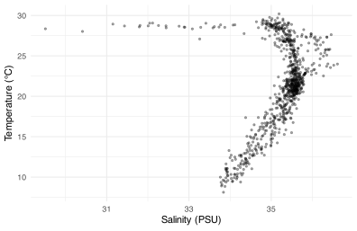
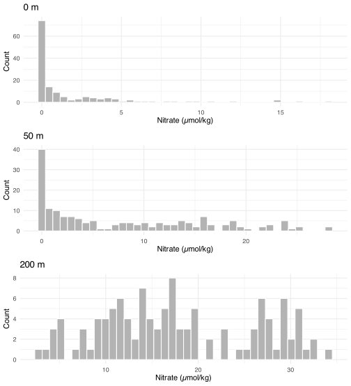
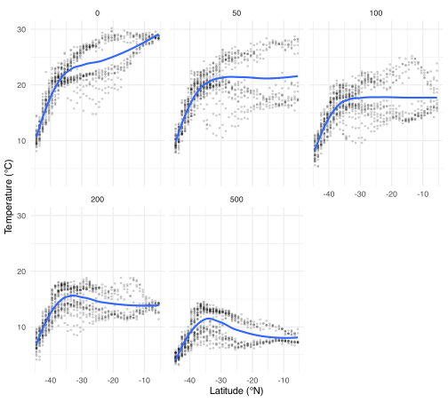
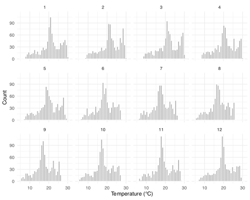
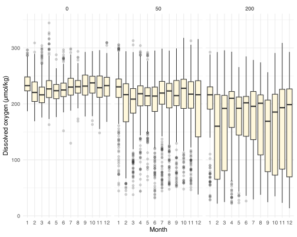
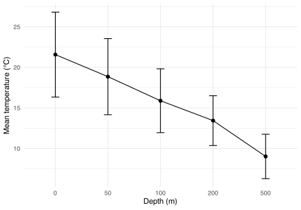
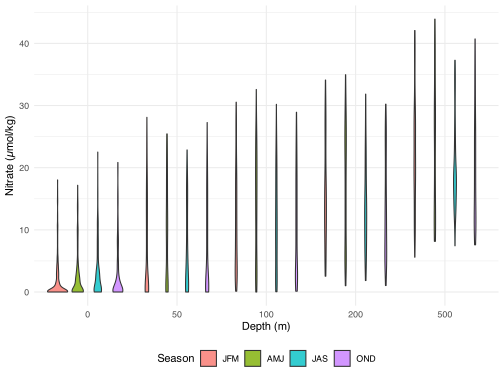

woa <- readr::read_csv(
here::here("data", "SAMOS", "processed", "woa18_sa_core_1deg_monthly.csv"),
show_col_types = FALSE
)
# convenience slices used repeatedly below
woa_feb_surf <- woa %>%
filter(month == 2, depth_m == 0)
woa_temp_depths <- woa %>%
filter(variable == "temperature", depth_m %in% c(0, 50, 100, 200, 500))BCB744 Task B
Smit, A. J. ![]()

The Self-Assessment Sheet is on iKamva
6–8. Graphics With ggplot2, Faceting Figures, and Brewing Colours (WOA edition)
In this task set you will generate several figures using a tidy extract of the World Ocean Atlas 2018 (WOA18) climatology.
NoteDataset significance (WOA18)
WOA18 provides globally gridded climatological means for core ocean variables:
- Temperature and salinity describe the physical state of the ocean.
- Dissolved oxygen reflects ventilation and biogeochemical conditions.
- Nutrients (nitrate, phosphate, silicate) constrain biological productivity.
In this task we use a regional extract (Southern Africa + adjacent ocean) at a 1° grid and a small set of depths.
TipData dictionary
See: data/SAMOS/processed/woa18_sa_core_1deg_monthly_DICTIONARY.md
Question 1
Create a scatterplot of salinity against temperature (a classic T–S view) for the surface (0 m) climatology in February. Label axes with units. (/10)
TipAnswer
woa_feb_surf %>%
filter(variable %in% c("temperature", "salinity")) %>%
select(lon, lat, variable, value) %>%
pivot_wider(names_from = variable, values_from = value) %>%
ggplot(aes(x = salinity, y = temperature)) +
geom_point(alpha = 0.35, size = 0.8) +
labs(x = "Salinity (PSU)", y = "Temperature (°C)") +
theme_minimal()

Interpretation (example): the scatter is not a time series; it is the spatial range of surface conditions across the region. Expect warmer, saltier points toward the subtropics and cooler/fresher points toward higher latitudes and near river-influenced shelves.
Question 2
Create three histograms of surface nitrate (February), one for each depth bin below (treat depth as a filter, not a facet):
- 0 m
- 50 m
- 200 m
Save each histogram as an R object. Then combine them into one figure using ggarrange() (1 column × 3 rows). (/25)
TipAnswer
n0 <- woa %>%
filter(month == 2, variable == "nitrate", depth_m == 0) %>%
ggplot(aes(x = value)) +
geom_histogram(bins = 40, fill = "grey70", colour = "white") +
labs(title = "0 m", x = "Nitrate (µmol/kg)", y = "Count") +
theme_minimal()
n50 <- woa %>%
filter(month == 2, variable == "nitrate", depth_m == 50) %>%
ggplot(aes(x = value)) +
geom_histogram(bins = 40, fill = "grey70", colour = "white") +
labs(title = "50 m", x = "Nitrate (µmol/kg)", y = "Count") +
theme_minimal()
n200 <- woa %>%
filter(month == 2, variable == "nitrate", depth_m == 200) %>%
ggplot(aes(x = value)) +
geom_histogram(bins = 40, fill = "grey70", colour = "white") +
labs(title = "200 m", x = "Nitrate (µmol/kg)", y = "Count") +
theme_minimal()
ggarrange(n0, n50, n200, ncol = 1, nrow = 3)

Interpretation (example): nitrate is typically low at the surface (consumed by biology) and increases with depth as remineralised nutrients accumulate.
Question 3
Create a scatter plot of temperature against latitude for February, and use facet_wrap() to create separate panels for each depth (0, 50, 100, 200, 500 m). Add a smooth line to each panel. (/10)
TipAnswer
woa %>%
filter(month == 2, variable == "temperature", depth_m %in% c(0, 50, 100, 200, 500)) %>%
ggplot(aes(x = lat, y = value)) +
geom_point(alpha = 0.15, size = 0.6) +
geom_smooth(se = FALSE, method = "loess") +
facet_wrap(~ depth_m, ncol = 3) +
labs(x = "Latitude (°N)", y = "Temperature (°C)") +
theme_minimal()

Interpretation (example): the surface panel usually shows the strongest meridional gradient; deeper panels show reduced seasonal/latitudinal contrast.
Question 4
Create a scatter plot of dissolved oxygen against temperature at the surface (0 m), using all months (1–12). Use facet_wrap() to create one panel per month, and map a continuous colour scale to oxygen using a custom gradient (not the default). (/10)
TipAnswer
woa %>%
filter(depth_m == 0, month %in% 1:12, variable %in% c("temperature", "dissolved_oxygen")) %>%
select(lon, lat, month, variable, value) %>%
pivot_wider(names_from = variable, values_from = value) %>%
ggplot(aes(x = temperature, y = dissolved_oxygen, colour = dissolved_oxygen)) +
geom_point(alpha = 0.5, size = 0.7) +
facet_wrap(~ month, ncol = 4) +
scale_colour_gradientn(
colours = c("#2c7bb6", "#abd9e9", "#ffffbf", "#fdae61", "#d7191c"),
name = "Oxygen (µmol/kg)"
) +
labs(x = "Temperature (°C)", y = "Dissolved oxygen (µmol/kg)") +
theme_minimal()Interpretation (example): oxygen tends to be higher in cooler waters, but the relationship can vary by month and location because circulation and biology matter.
Question 5
Using the figure created in Question 4, also show the effect of depth by adding shapes for depth (0 vs 50 m). Fit a single best‑fit straight line (ignoring depth) to each monthly panel. Explain what the line represents. (/10)
TipAnswer
woa %>%
filter(depth_m %in% c(0, 50), month %in% 1:12, variable %in% c("temperature", "dissolved_oxygen")) %>%
select(lon, lat, month, depth_m, variable, value) %>%
pivot_wider(names_from = variable, values_from = value) %>%
ggplot(aes(x = temperature, y = dissolved_oxygen)) +
geom_point(aes(colour = dissolved_oxygen, shape = factor(depth_m)), alpha = 0.55, size = 0.8) +
geom_smooth(method = "lm", se = TRUE, colour = "black") +
facet_wrap(~ month, ncol = 4) +
scale_colour_viridis_c(name = "Oxygen (µmol/kg)") +
labs(
x = "Temperature (°C)",
y = "Dissolved oxygen (µmol/kg)",
shape = "Depth (m)"
) +
theme_minimal()Interpretation (example): the line is a within-panel linear summary of the oxygen–temperature association across all grid cells shown in that month. It is not causal, and it ignores spatial structure and depth effects.
Question 6
What are the benefits of using faceting in data visualisation? (/3)
TipAnswer
- Faceting lets you compare the same relationship across groups (months, depths, variables) using a consistent visual grammar.
- It reduces overplotting and legend complexity by separating groups into panels.
- It supports pattern recognition (seasonal structure, depth structure) without changing the underlying plotting code.
Question 7
Create a scatter plot of phosphate against nitrate at 200 m for the annual climatology (month == 0), coloured by silicate (continuous palette). (/10)
TipAnswer
woa %>%
filter(depth_m == 200, month == 0, variable %in% c("nitrate", "phosphate", "silicate")) %>%
select(lon, lat, variable, value) %>%
pivot_wider(names_from = variable, values_from = value) %>%
ggplot(aes(x = nitrate, y = phosphate)) +
geom_point(aes(colour = silicate), alpha = 0.6, size = 0.8) +
scale_colour_viridis_c(name = "Silicate (µmol/kg)") +
labs(x = "Nitrate (µmol/kg)", y = "Phosphate (µmol/kg)") +
theme_minimal()Interpretation (example): nutrients often covary because they are regenerated together at depth, but the ratios can change with region and water mass history.
Question 8
Create histograms of temperature for each month (surface, 0 m) using facet_wrap(). (/6)
TipAnswer

Question 9
Create boxplots of dissolved oxygen by month and facet by depth (0, 50, 200 m). (/8)
TipAnswer

Question 10
Calculate the mean ± SD of temperature at each depth (0, 50, 100, 200, 500 m) for February, then plot the means with error bars. (/10)
TipAnswer
summary_temp <- woa %>%
filter(month == 2, variable == "temperature", depth_m %in% c(0, 50, 100, 200, 500)) %>%
group_by(depth_m) %>%
summarise(
mean_temp = mean(value, na.rm = TRUE),
sd_temp = sd(value, na.rm = TRUE),
.groups = "drop"
)
summary_temp %>%
ggplot(aes(x = factor(depth_m), y = mean_temp, group = 1)) +
geom_point(size = 2) +
geom_line() +
geom_errorbar(aes(ymin = mean_temp - sd_temp, ymax = mean_temp + sd_temp), width = 0.15) +
labs(x = "Depth (m)", y = "Mean temperature (°C)") +
theme_minimal()

Interpretation (example): mean temperature declines with depth; SD reflects spatial variability across the study region at each depth.
Question 11
Create a violin plot of nitrate by depth (0, 50, 100, 200, 500 m), filled by month group: define season as JFM (1–3), AMJ (4–6), JAS (7–9), OND (10–12). (/8)
TipAnswer
woa %>%
filter(month %in% 1:12, variable == "nitrate", depth_m %in% c(0, 50, 100, 200, 500)) %>%
mutate(
season = case_when(
month %in% 1:3 ~ "JFM",
month %in% 4:6 ~ "AMJ",
month %in% 7:9 ~ "JAS",
month %in% 10:12 ~ "OND"
),
season = factor(season, levels = c("JFM", "AMJ", "JAS", "OND"))
) %>%
ggplot(aes(x = factor(depth_m), y = value, fill = season)) +
geom_violin(trim = TRUE, alpha = 0.8) +
labs(x = "Depth (m)", y = "Nitrate (µmol/kg)", fill = "Season") +
theme_minimal() +
theme(legend.position = "bottom")

Question 12
Create a small summary table showing the number of observations for each combination of variable and depth_m (all months combined). (/6)
TipAnswer
R> # A tibble: 36 × 3
R> variable depth_m n
R> <chr> <dbl> <int>
R> 1 dissolved_oxygen 0 3868
R> 2 dissolved_oxygen 50 3868
R> 3 dissolved_oxygen 100 3868
R> 4 dissolved_oxygen 200 3868
R> 5 dissolved_oxygen 500 3868
R> 6 dissolved_oxygen 1000 3868
R> 7 nitrate 0 1806
R> 8 nitrate 50 1806
R> 9 nitrate 100 1806
R> 10 nitrate 200 1806
R> # ℹ 26 more rowsQuestion 13
Briefly describe two patterns you observe in any of the figures above. (/4)
TipAnswer
Example patterns:
- Temperature decreases with depth, and the surface layer shows the strongest latitudinal/seasonal structure.
- Nutrients generally increase with depth (and are typically lowest at the surface), reflecting biological uptake near the surface and regeneration at depth.
Citation
BibTeX citation:
@online{a._j.,
author = {A. J. , Smit},
title = {BCB744 {Task} {B}},
url = {http://samos-r.netlify.app/tasks/BCB744_Task_B.html},
langid = {en}
}
For attribution, please cite this work as:
A. J. S BCB744 Task B. http://samos-r.netlify.app/tasks/BCB744_Task_B.html.